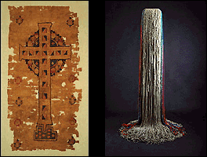

|
Textiles | |
|
(c) |
|
|
(Left)Egyptian (Coptic) |
(Right)Claire Zeisler |
|
The Institute's 5,000 textiles reflect the artistic
traditions of many diverse cultures, time periods, and
geographical areas, from 5th century Coptic Egypt to late
20th century Africa, America, and Europe. Textiles are
included in some special exhibitions as well as permanent
galleries. | |